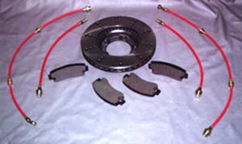
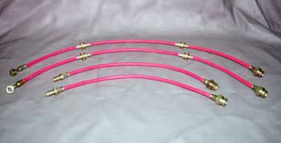

Brakes Upgrade Kit


Cross-drilled rotors are not only made for race cars but also for street cars. Drilled rotors performs as a heat vent to keep your brakes cooler. Cooler brakes means longer rotor and brake pad life. Stainless steel-braided brake lines helps your brake system respond quickly to slow you down faster. Relieves the "spongy" feeling from your brake system.